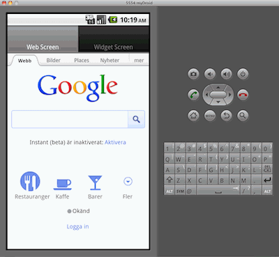
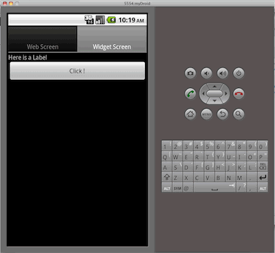
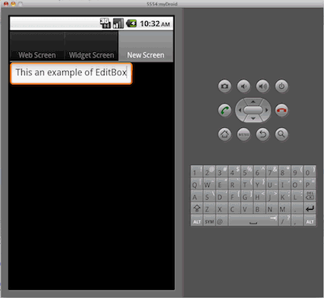

Our JavaScript NativeUI API gives you direct access to native user interface widgets, like nav bars, buttons, tab screens, and list boxes, directly from HTML or JavaScript. Use it standalone, or side-by-side with the other APIs in Wormhole to extend the capabilities of your apps.
The JavaScript NativeUI Library is included in the MoSync package. Choose one of our HTML5 templates when you create your project, then simply call the library in your JavaScript to use it:
<script src="wormhole.js">
We include an example application project for iOS and Android, WormholeNativeUI, which is a complete simple application that uses the library.
Notice that the example application has a sub-folder named /LocalFiles which will include all of your HTML, JavaScript and CSS files and also the resource file that you will use from JavaScript/HTML. There are also some C++ files in the project folder that in most cases you do not need to touch, unless you want to extend the system or override the low-level functionality.
To build and run the example application from the MoSync IDE you need to have access to either Android emulator or iPhone Simulator. The IDE has built-in support for running your application in either of those tools (for Android, see Running the Android Emulator Directly from the MoSync IDE). You can also, of course, run your project on a device if you have access to one.
Note: You can also use MoSync Reload for rapid development of you HTML/JavaScript basednative UI applications.
We are going to use the Android emulator for next steps of this guide but running the app on other platforms is very similar. Select the Android 2.x profile from the profile database in your MoSync IDE, and then press run and select Android Emulator as the target. Here is what you should see on your screen:


First let’s have a quick look at the example application's index file. All of the Native widgets are <div> tags wrapped inside a main <div> tag with ID “NativeUI”. Then there is a TabScreen screen widget which wraps everything else. When initiated the system loads the tag “mainScreen” to the actual screen of the phone.
There are several widget placed inside this main screen in a specific layout (to figure out what each of them does, refer to the NativeUI Widget Types documentation).
<body onload="NativeUI.initUI()"> <div id="NativeUI"> <div data-widgetType="TabScreen" id="mainScreen"> <div data-widgetType="Screen" id="firstScreen" data-title="Web Screen" data-icon="img/TabIconWebView.png"> <div data-widgetType="WebView" id="WebBrowser" data-width="-1" data-height="-1" data-url="http://www.google.com"> </div> </div> <div data-widgetType="Screen" id="SecondScreen" data-title="Widget Screen" data-icon="img/TabIconImageSwiper.png"> <div data-widgetType="VerticalLayout" id="mainLayout" data-width="-1" data-height="-1"> <div data-widgetType="Label" id="myLabel" data-width="-1" data-text="Here is a Label" data-fontSize="14" data-fontColor="0xEE3B3B"> </div> <div data-widgetType="Button" id="myButton" data-width="-1" data-text="Click !" data-onevent="handleButtonEvent()"> </div> </div> </div> </div> </div> </body>
Now let’s add another Tab to our application. Insert the following code just before the closing </div> tag of the TabScreen:
<div data-widgetType="Screen" id="ThirdScreen" data-title="New Screen" data-icon="img/TabIconWebView.png"> <div data-widgetType="EditBox" id="myEditBox" data-width="-1" data-height="-2" data-text="This an example of EditBox"> </div> </div>
Now try running your app again and you can see the following screen:
